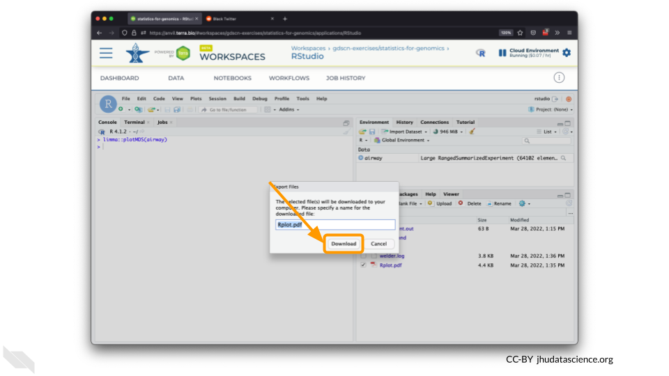
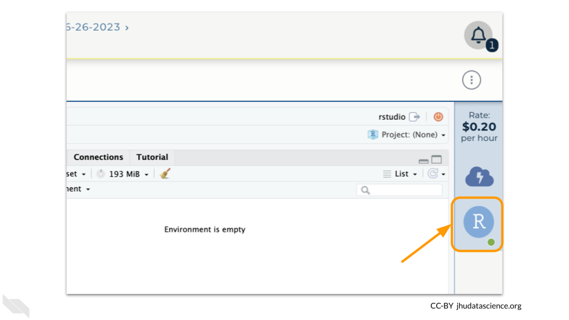
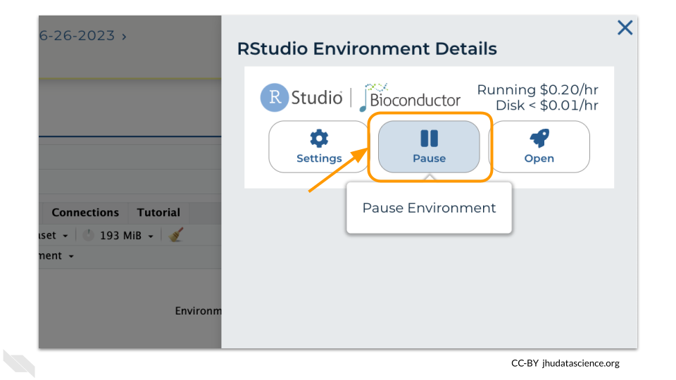
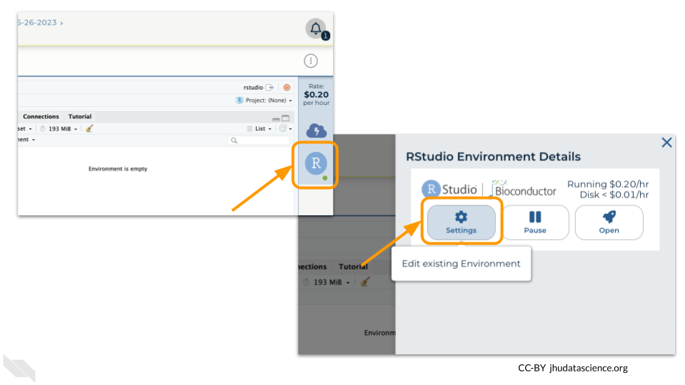
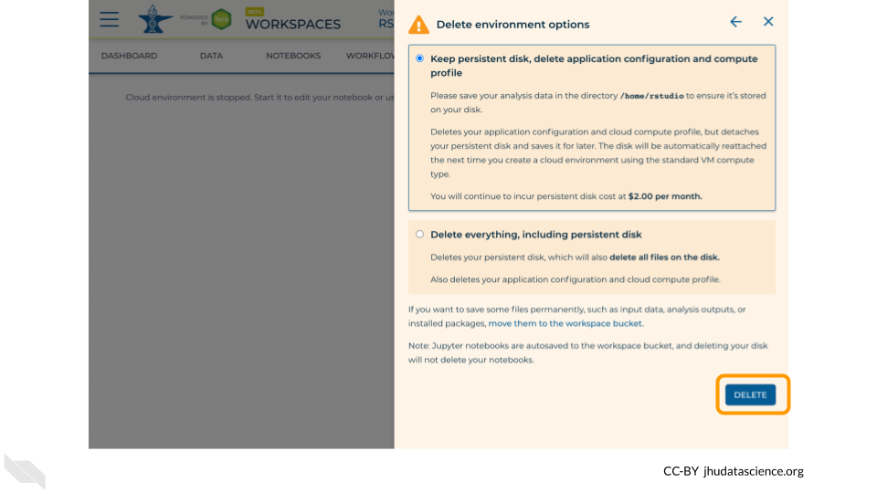

Chapter 4 Working in RStudio
Now that you have created a Workspace, you can create an RStudio cloud environment. This will allow you to interface with data and perform genomics-based analyses with add on packages from the Bioconductor community.
4.1 Launch RStudio Cloud Environment
Click on the name of the Workspace you just created. You should be routed to a link that looks like:
https://anvil.terra.bio/#workspaces/<billing-project>/<workspace-name>.On the top right, Click the gear icon to access your Cloud Environment options.
You will see a list of costs because it costs a small amount of money to use cloud computing. Click “CUSTOMIZE”.
Click on the first drop down menu to see what other software configurations are available.

Scroll down and select RStudio from the Community-Maintained RStudio Environments section. NOTE: AnVIL is very versatile and can scale up to use very powerful cloud computers. It’s very important that you select the cloud computing environment described here to avoid runaway costs.
Leave everything else as-is. To create your RStudio Cloud Environment, click on the “CREATE” button.
Your Cloud Environment will be available in a few minutes after the cloud resources are provisioned and your software starts up. The upper right corner displays the status and should say “Creating” while resources are being provisioned.
After a few minutes, you will see the status change to “Running”.
Click on the “R” icon to launch RStudio.
You should now see the RStudio interface with information about the version printed to the console.

4.2 Tour RStudio
Next, we will be using RStudio and the package Glimma to create interactive plots. See this vignette for more information.
The Bioconductor team has created a very useful package to programmatically interact with Terra and Google Cloud. Install the
AnVILpackage. It will make some steps easier as we go along.BiocManager::install("AnVIL")
You can now quickly install precompiled binaries using the AnVIL package’s
install()function. We will use it to install theGlimmapackage and theairwaypackage. Theairwaypackage contains aSummarizedExperimentdata class. This data describes an RNA-Seq experiment on four human airway smooth muscle cell lines treated with dexamethasone. We will learn more about SummarizedExperiments in following chapters.AnVIL::install(c("Glimma", "airway"))
Load the example data.
library(airway) data(airway)The multidimensional scaling (MDS) plot is frequently used to explore differences in samples. When this data is MDS transformed, the first two dimensions explain the greatest variance between samples, and the amount of variance decreases monotonically with increasing dimension. The following code will launch a new window where you can interact with the MDS plot.
Glimma::glimmaMDS(assay(airway), group = colData(airway)$dex)Change the
colour_bysetting to “groups” so you can easily distinguish between groups. In this data, the “group” is the treatment.
You can download the interactive html file by clicking on “Save As”.
You can also download plots and other files created directly in RStudio. To download the following plot, click on “Export” and save in your preferred format to the default directory. This saves the file in your cloud environment.
limma::plotMDS(airway)
You should see the plot in the “Files” pane.

Select this file and click “More” > “Export”

Select “Download” to save the file to your local machine.

4.3 More Practice with iSEE
iSEE is a Bioconductor package that provides an interactive Shiny-based graphical user interface for exploring data stored in SummarizedExperiment objects (Rue-Albrecht et al. 2018). Run the following.
# Install iSEE
AnVIL::install("iSEE")
# Launch app on airway data
iSEE::iSEE(airway)
The Shiny app will allow you to explore genes and samples.
4.4 Pause RStudio
The upper right corner reminds you that you are accruing cloud computing costs.

You should minimize charges when you are not performing an analysis. You can do this by clicking on “Stop cloud environment”. This will release the CPU and memory resources for other people to use. Note that your work will be saved in the environment and continue to accrue a very small cost. Your instructor can delete these environments to stop costs accruing, so it’s a good idea to save code or output somewhere else, such as GitHub or your local machine.

4.5 Delete RStudio Cloud Environment
Stopping your cloud environment only pauses your work. When you are ready to delete the cloud environment, click on the gear icon in the upper right corner to “Update cloud environment”.

Click on “Delete Environment Options”.

If you are certain that you do not need the data and configuration on your disk, you should select “Delete everything, including persistent disk”.

Select “DELETE”.

4.6 Video Guide
In addition to the steps above, you can review this video guide on how to launch RStudio on AnVIL.
The slides for this tutorial are are located here.
sessionInfo()## R version 4.0.2 (2020-06-22)
## Platform: x86_64-pc-linux-gnu (64-bit)
## Running under: Ubuntu 20.04.3 LTS
##
## Matrix products: default
## BLAS/LAPACK: /usr/lib/x86_64-linux-gnu/openblas-pthread/libopenblasp-r0.3.8.so
##
## locale:
## [1] LC_CTYPE=en_US.UTF-8 LC_NUMERIC=C
## [3] LC_TIME=en_US.UTF-8 LC_COLLATE=en_US.UTF-8
## [5] LC_MONETARY=en_US.UTF-8 LC_MESSAGES=C
## [7] LC_PAPER=en_US.UTF-8 LC_NAME=C
## [9] LC_ADDRESS=C LC_TELEPHONE=C
## [11] LC_MEASUREMENT=en_US.UTF-8 LC_IDENTIFICATION=C
##
## attached base packages:
## [1] stats graphics grDevices utils datasets methods base
##
## loaded via a namespace (and not attached):
## [1] knitr_1.33 magrittr_2.0.2 hms_0.5.3 R6_2.4.1
## [5] rlang_0.4.10 highr_0.8 stringr_1.4.0 httr_1.4.2
## [9] tools_4.0.2 xfun_0.26 png_0.1-7 jquerylib_0.1.4
## [13] htmltools_0.5.0 ellipsis_0.3.1 ottrpal_0.1.2 yaml_2.2.1
## [17] digest_0.6.25 tibble_3.0.3 lifecycle_1.0.0 crayon_1.3.4
## [21] bookdown_0.24 readr_1.4.0 vctrs_0.3.4 fs_1.5.0
## [25] curl_4.3 evaluate_0.14 rmarkdown_2.10 stringi_1.5.3
## [29] compiler_4.0.2 pillar_1.4.6 pkgconfig_2.0.3